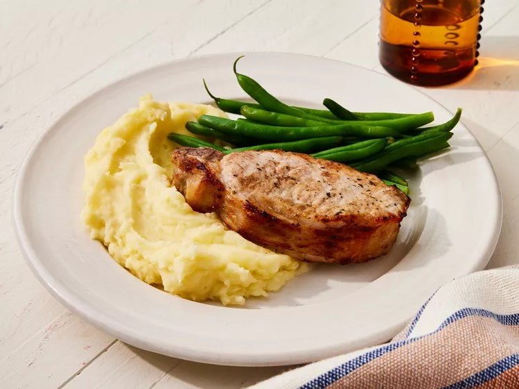

Air Fryer Ranch Pork Chops

Description
This air fryer pork chop recipe is so simple with ranch seasoning mix and just 10 minutes in the air fryer.
I prefer my chops slightly pink to ensure juiciness, but feel free to add an extra minute on each side for well-done.
Try different varieties of ranch mix (like spicy or bacon) to change up the flavor.
Ingredients
- 4 boneless, center-cut pork chops, 1-inch thick
- cooking spray
- 2 teaspoons dry ranch salad dressing mix
Directions
- Gather all ingredients.
- Place pork chops onto a plate and lightly spray both sides with cooking spray.
- Sprinkle both sides with ranch seasoning mix and let sit at room temperature for 10 minutes.
- Spray an air fryer basket with cooking spray and preheat the air fryer to 390 degrees F (200 degrees C).
- Working in batches if necessary to ensure they are not overcrowded, place chops into the preheated air fryer.
Cook for 10 minutes, flipping halfway through. An instant-read thermometer inserted into the center should read at least 145 degrees F (63 degrees C).
- Transfer to a foil-covered plate and let sit for 5 minutes before serving.
Back to main